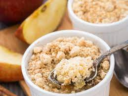

Crumble

Description
This is the easiest apple crumble recipe and an all-time favourite quick and easy dessert.
Each serving contains 618 kcal, 6g protein
,83g carbohydrates and 28.5g fats
Ingredients
For the crumble
- 300g/10½oz plain flour, sieved
- pinch of salt
- 175g/6oz brown sugar
- 200g/7oz unsalted butter at room temperature, cubed, plus a little for greasing
For the filling
- apples, peeled, cored and cut into 1cm/½in pieces
- 50g/2oz brown sugar
- 1 tbsp plain flour
- 1 pinch ground cinnamon
Steps
- Preheat the oven to 180C/350F/Gas 4.
- Place the flour, salt and sugar in a large bowl and mix well.
Taking a few cubes of butter at a time rub into the flour mixture. Keep rubbing until the mixture resembles breadcrumbs.
- Place the fruit in a large bowl and sprinkle over the sugar, flour and cinnamon. Stir well being careful not to break up the fruit.
- Butter a 24cm/9in ovenproof dish. Spoon the fruit mixture into the bottom, then sprinkle the crumble mixture on top.
- Bake in the oven for 40-45 minutes until the crumble is browned and the fruit mixture bubbling.
- Serve with thick cream or custard.